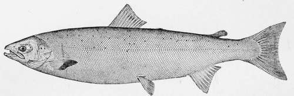

The Salmon. Part 2
Description
This section is from the book "American Game Fishes", by W. A. Perry. Also available from Amazon: American Game Fishes: Their Habits, Habitat, and Peculiarities; How, When, and Where to Angle for Them.
The Salmon. Part 2
All of these Pacific Coast fishes have their several peculiarities very strongly developed. The snout in the adult males, in summer and fall, is greatly distorted; the premaxillaries are prolonged, hooking over the lower jaw, which in turn is greatly elongated and somewhat hooked at tip; the teeth on these bones are greatly enlarged. The body becomes deep and compressed, a fleshy lump is developed in front of the dorsal fin, and the scales of the back become imbedded in the flesh. The flesh, which is red and rich in the spring, becomes dry and poor then. They are in no respect like the shapely, symmetrical, clean, lithe, and beautiful fish which dominate the Atlantic streams.
Typically, Salmo Quinnat (O. chonicha), is described by Jordan & Gilbert as follows:
Color dusky above, often tinged with olivaceous or bluish; sides and below silvery; head dark slaty, usually darker than the body, and little spotted; back dorsal fin and tail usually profusely covered with round black spots-these are sometimes few, but very rarely altogether wanting; sides of head and caudal fin with a peculiar metallic tin-colored luster; male, about the spawning season (October), blackish, more or less tinged or blotched with dull red; head conic, rather pointed in the females and spring males. Maxillary rather slender, the small eye behind its middle. Teeth small, larger on sides of lower jaw than in front; vomerine teeth very few and weak, disappearing in the males. In the males, in late summer and fall, the jaws become elongated and distorted, and the anterior teeth much enlarged, as in the related species. The body then becomes deeper, more compressed, and arched at the shoulders, and the color nearly black. Preopercle and opercle strongly convex. Body comparatively robust, its depth greatest near its middle. Ventials inserted behind middle of dorsal, vential appendage half the length of the fin; caudal- unusual in this genus-strongly forked on a rather slender caudal peduncle. Flesh red and rich in spring, becoming paler in the fall as the spawning season approaches. Head 4; depth 4. B. 15-16 to 18-19, the number on the two sides always unlike; D. 11; A. 16. Gill-rakers usually 9x14-/. e., 9 above the angle and 14 below. Pyloric coeca 140-185. Scales usually 27-146-29, the number in a longitudinal series varying from 140-155, and in California specimens as low as 135.
Very different is the Atlantic Salmon (S. salar Linnaeus) to the scientific eye, when compared with the foregoing, and described by Jordan & Gilbert, to-wit:
Body moderately elongate, symmetrical, not generally compressed. Head rather low. Mouth moderate, the maxillary reaching just past the eye; its length 2^-3 in head; in young specimens the maxillary is proportionately shorter. Preoperculum with a distinct lower limb, the angle rounded.
Scales comparatively large, rather largest posteriorly, silvery, and well-imbricated in the young, becoming imbedded in adult males. Coloration in the adult brownish above, the sides more or less silvery, with numerous black spots on sides of head, on body and on fins, and red patches along the sides in the males; young specimens (parrs) with about eleven dusky cross-bars, besides black spots and red patches, the color, as well as the form of the head and body, varying much with age, food, and condition; the black spots in the adult often x-shaped, or xx-shaped. Head 4; depth 4; Br. 11; D. 11; A. 9; scales 23-120-21 ; vertebrae 60; pyloric coeca about 65. Weight 15-40 pounds. North Atlantic, ascending all suitable rivers, and the region north of Cape Cod; sometimes permanently land-locked in lakes, where its habits and coloration (but no tangible specific characters) change somewhat, when it becomes, in America, var. Sebago.
The natural southern limit of the Atlantic Salmon, within historical time, was unquestionably the Hudson River. It was so when Hendrik Hudson discovered it, but subsequent geological changes must have occurred in its upper tributaries to bar the passage to suitable spawning-grounds. Its extreme northern limit has not been traced, but it has been found in a dozen of the rivers which empty into the Arctic Ocean, and its range from the Atlantic to the Pacific has been fully established. It is abundant along the entire Labrador coast, and up around Cape Chidley, its extreme northern mount, in about latitude 62 degrees, and thence around the Koksok, Georges River, Whale River, and other rivers of the great Ungava Bay, on the north coast of Labrador, and thence to the western entrance of Hudson Strait, seems to be its limit in that direction.
The Arctic habitat of the Pacific Salmon begins about Wager Inlet, and the Melville Peninsula, and continues westward indefinitely. Between the Hudson Strait and Wager Inlet, the great Hudson Bay is projected southward in one tremendous indentation, and in its waters no Salmon are found-only Sea Trout. The Bay separates the family of Salar from the family OncdrHynchusy of which Chonicha is chief. Some of the Arctic rivers, like the Mackenzie, are barren of Salmon, as is true also of some Atlantic coast rivers. Doubtless there are abundant physical reasons to account for this as well as for the big break in the range of the Salmon made by the interposition of the great Hudson Bay; and when these are ascertained, scientists may be able to discover why the fish to the eastward of the Bay are of one species (Salar), and those to the westward of another (Chonichci).
Atlantic Salmon-salmo Salar.
In the physiology of the animal kingdom, naturalists have discovered that the quality of adaptation to environment plays an important part in bringing about and establishing those variations from original forms, which are called species. Constancy of a primitive type depends upon the constancy of external conditions. Now, it was long ago discovered that not only can many species of fish gradually accommodate themselves to either salt or fresh water, but some seem quite indifferent to rapid changes from one to the other. On this basis scientists are readily able to account for that fresh-water variety of Atlantic Salmon known as S. Salar var. Scbago, which in all respects, except the habit of anadromy, it so nearly resembles. So closely, indeed, are the generic traits maintained, that even the food materials of both the salt and fresh water species are analogous, one subsisting on caplins, and the other on its related species, the smelts, while the geographical ranges of the two are co-extensive and conterminous. Both the Atlantic and Pacific varieties are represented by fresh-water analogues: for the Land-locked Salmon are not only distributed throughout Quebec, Ontario, and the maritime provinces of Canada, as well as Maine, but they occur in the lakes of British Columbia and Idaho, and in tributary lakes of Lake Superior, where they "are called Red Trout by the natives, and grow to the size of forty pounds, and are not to be confounded with the common Lake Trout (5. Namaycusli), whose flesh is white." (L. H. Smith, of Strathroy, Canada, in London Field.)
Continue to:
- prev: The Salmon
- Table of Contents
- next: The Salmon. Part 3